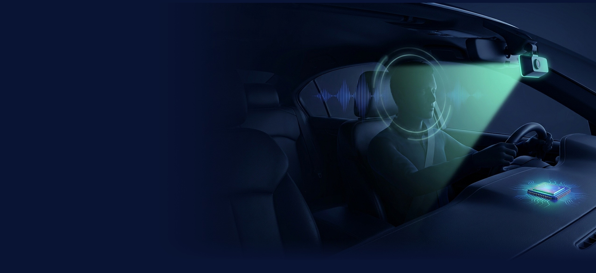
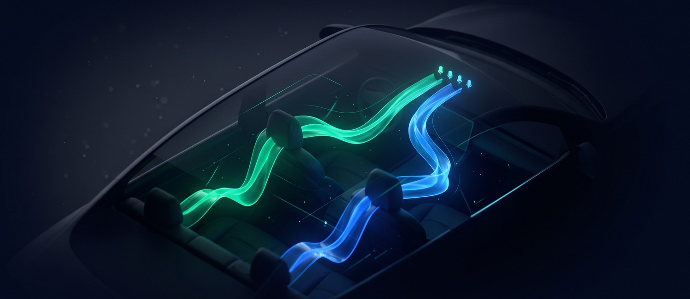
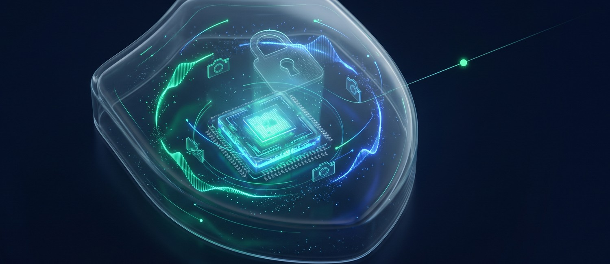
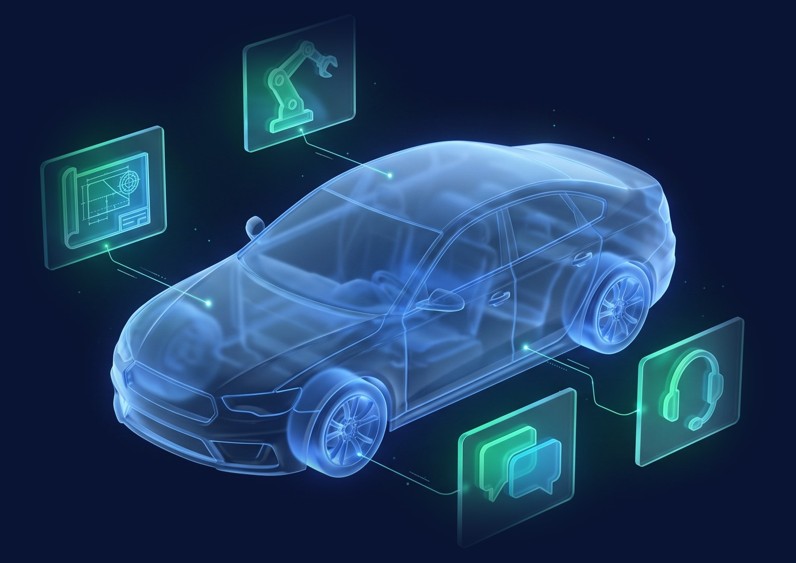

GBaseシリーズ
車内の「人」を理解する AI ／ エッジで動く AI
クルマの中で、
人を理解する AI を動かす。
表情や声から、乗員の状態の変化に気づく。
映像も音声も車外に出さず、車載クラスの処理基盤で動かす前提で設計します。
車内 AI ソリューション──気づく・話す・守る
気づく
マルチモーダル理解
- カメラとマイクの情報を
組み合わせて推定
- 眠気・疲れ・ストレスなど、
運転に関わる状態を捉える
- 車内の明るさや騒音の変化にも
配慮した設計

話す
車内の音声対話
- 走行音の中でも聞き取る
音声認識
- 複数のマイクで
誰が話したかを聞き分け
- 状態に合わせて、休憩や
手順をやさしく案内

守る
プライバシー設計
- 映像・音声は
端末の中で処理
- 車外へ送るのは
判定の結果だけ
- 顔の特徴データを
保存しない構成にも対応
大きな AI を、小さな計算資源で動かす技術
クラウドに頼れない車内・工場・機密環境のために、モデル選定から実機での最適化までを 1 チームで行います。
自社製品での実績
31B 級の LLM を、自社で量子化・日本語化
- GBase-gemma-4-31B-it：オープンモデルを自社で量子化・日本語化・長文対応に拡張
- 画像・音声 AI でも、軽量化からエッジ機器への実装まで対応
ISO 27001／ISO 27017情報セキュリティ認証
Sparticle 株式会社研究から実装まで、AI を「動くもの」にする会社
裏面：オンプレミスで動く GBase シリーズ →
GBaseシリーズ
データを外に出さない AI を、
開発・工場・販売の現場へ。
機密の図面や試験記録も、お客様との会話も。
オンプレミス・閉域環境でも動く GBase シリーズで、社内の知識を AI に変えます。
GBase シリーズ
GBase OnPrem
社内で完結する生成 AI 基盤
- 自社チューニングの31B 級 LLMを
社内サーバーで運用
- 出典つきRAG 検索と権限管理
- 導入は最短 1〜2 か月
30分 → 2分
技術情報の検索時間
大手製造業様の事例
GBase Knowledge
会議の記録から資料づくりまで
- 録るだけで議事録が完成
（10 言語の会議に対応）
- 社内資料と議事録を横断し
出典つきで回答
- 知識からスライドを自動作成
30分 → 数分
会議後の議事録づくり
導入企業の実績にもとづく目安
GBase Support
AI コンシェルジュ・電話受付
- Web・チャット・電話の
問い合わせに AI が回答
- 10 言語以上に対応
- 難しい相談は人に引き継ぎ
最大 70 % 削減
案内所・電話対応の件数
株式会社ルミネ様 NEWoMan 高輪
自動車業界での使い方
| 現場 | こんな課題に |
|---|
| 開発・設計 | 図面・仕様書・試験記録を、社外に出さずに AI で検索したい |
| 工場・品質 | 作業手順や過去の不具合事例を、現場ですぐに引き出したい |
| 会議・プロジェクト | 多国籍チームの会議を記録し、決定事項と資料づくりを速めたい |
| 販売店・コールセンター | 問い合わせ・電話・多言語の対応を、AI で受け止めたい |

研究の最前線と、車載量産の現場を知るチーム
博士・博士課程 8 名東京大学・大阪大学・
慶應義塾大学ほか
トップ国際会議CVPR・ECCV・EMNLP・
ACL ほかで発表
車載量産 8 年超Tier1 での ADAS・
自動駐車・XiL 検証
音声・半導体・V2X話者分離・SoC 設計・
車載セキュリティ
※ 事例の数値は各社の公開事例にもとづく実績です。効果は環境・運用体制により異なります。記載の会社名・製品名は各社の商標または登録商標です。